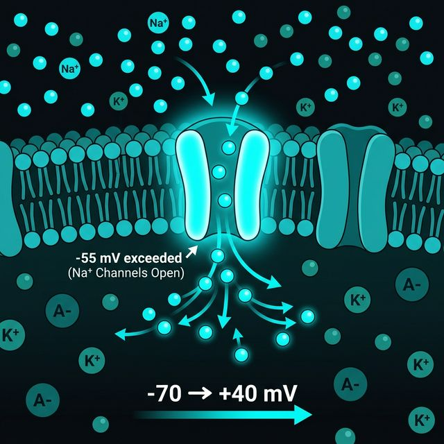
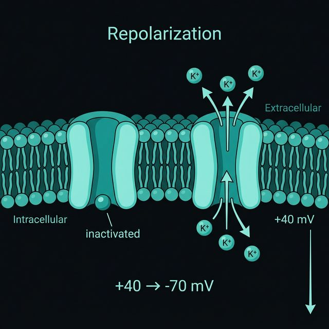

Aşama 1: Dinlenme \( -70 \text{ mV} \)
Voltaj kapılı \( \text{Na}^+ \) kanalları kapalı. \( \text{Na}^+ \), \( -132 \text{ mV} \)'luk devasa bir baskıyla eşik noktasında bekliyor ancak içeri giremez. \( \text{K}^+ \) sızıntı kanalları açık, sistem 1.2'den bildiğimiz dinamik dengede.

Aşama 2: Depolarizasyon \( -70 \rightarrow +40 \text{ mV} \)
\( -55 \text{ mV} \) eşiği aşılınca \( \text{Na}^+ \) kanalları hızla açılır. Birikmiş \( -132 \text{ mV} \)'luk baskı serbest kalır ve \( \text{Na}^+ \) hücre içine hücum eder. İçerisi milisaniyeler içinde \( +40 \text{ mV} \)'a fırlar.

Aşama 3: Repolarizasyon \( +40 \rightarrow -70 \text{ mV} \)
\( \text{Na}^+ \) kanalları açıldıktan ~1 ms sonra içeriden otomatik olarak "inaktive" olur (kapanır). Aynı anda yavaş açılan voltaj kapılı \( \text{K}^+ \) kanalları tam kapasite devreye girer. \( \text{K}^+ \) hızla dışarı çıkar, içerisi tekrar negatifleşir.

Aşama 4: Hiperpolarizasyon \( -80 \text{ mV} \)
\( \text{K}^+ \) kanalları yavaş kapanır; \( -70 \text{ mV} \)'a ulaşıldığında hâlâ açıktırlar. Fazla \( \text{K}^+ \) çıkışı içeriyi \( -80 \text{ mV} \)'a kadar düşürür. Kanallar kapanınca \( \text{Na}^+/\text{K}^+ \) pompası dengeyi \( -70 \text{ mV} \)'a geri getirir.